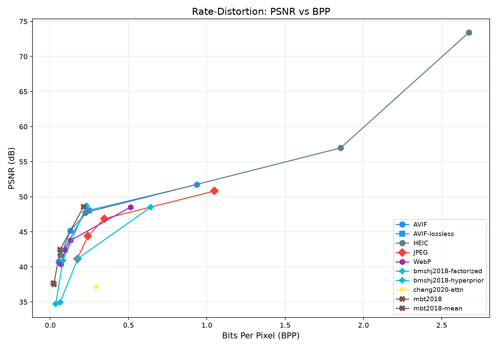
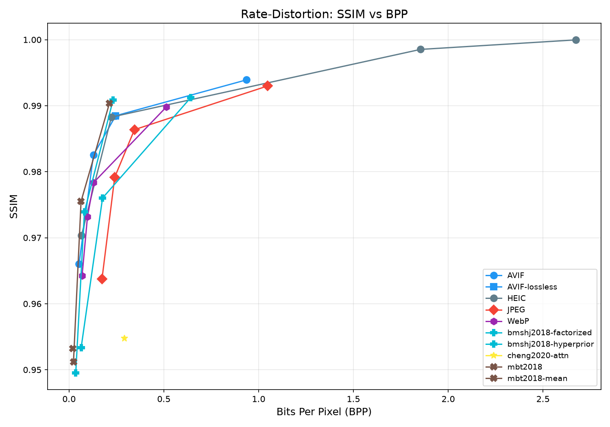
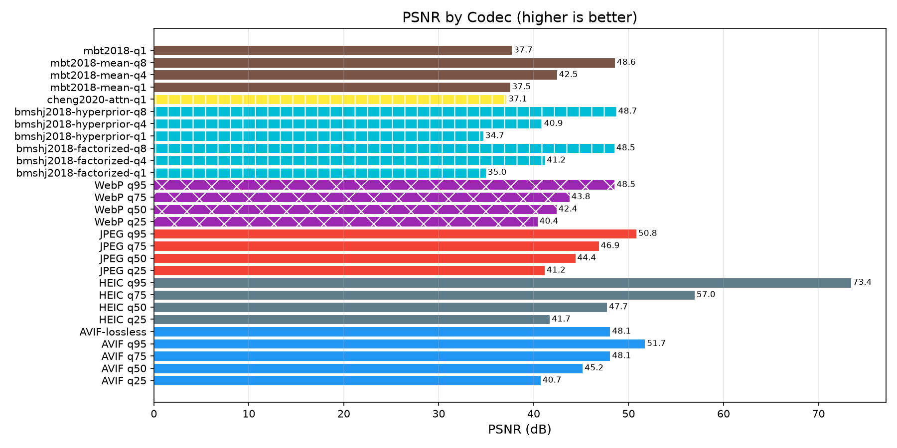
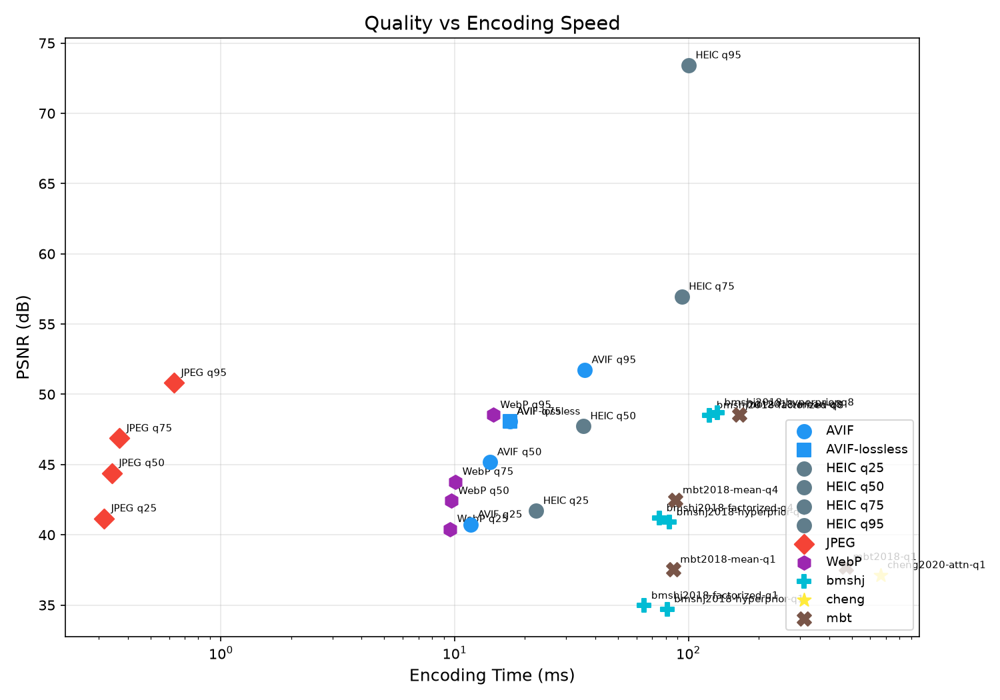
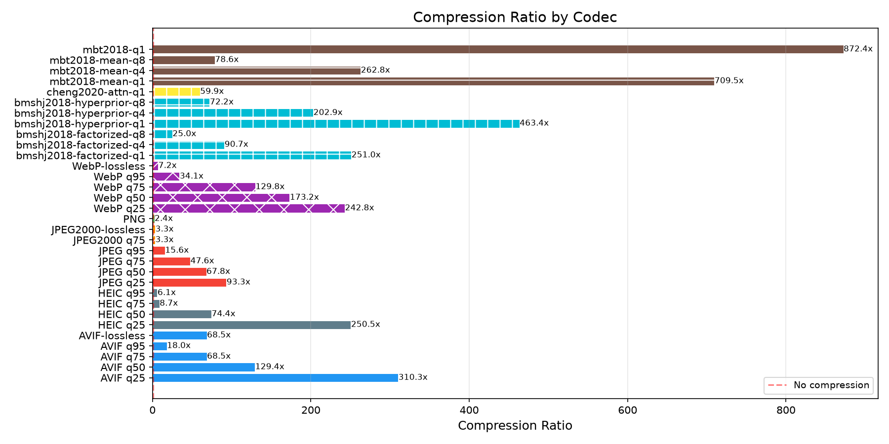
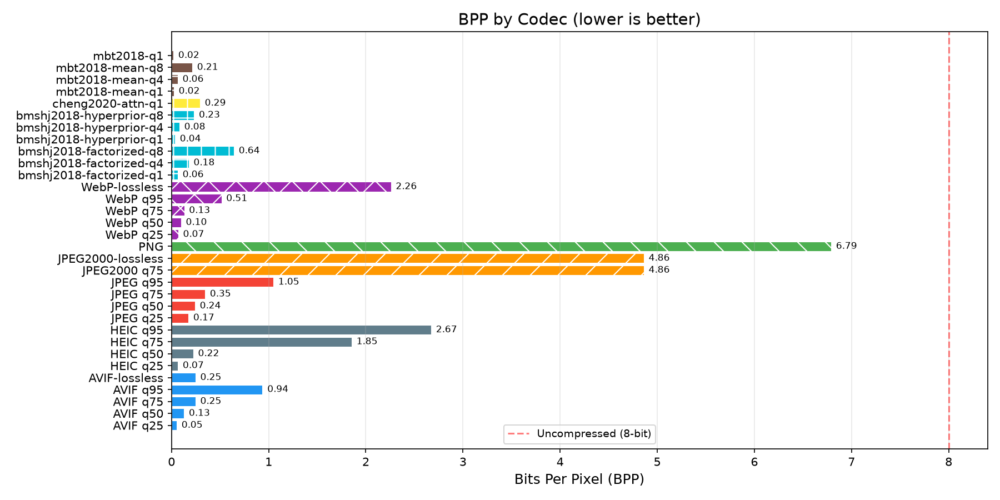
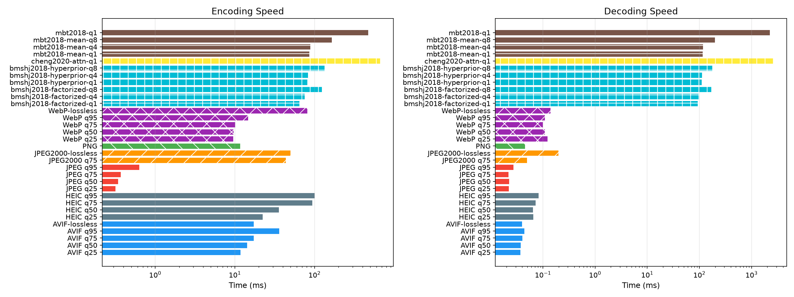
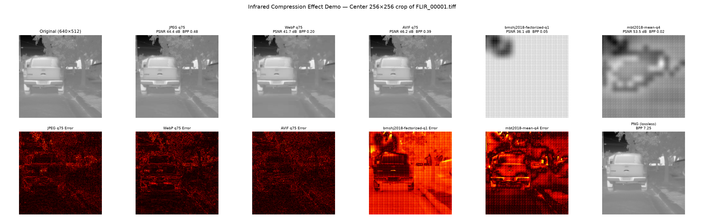

FLIR ADAS 1.3 Thermal Dataset — Traditional & Learned Codecs
Average metrics across all test images for each codec configuration.
| Codec | Images | PSNR (dB) | SSIM | BPP | Ratio | Enc (ms) | Dec (ms) | Size (KB) |
|---|---|---|---|---|---|---|---|---|
| AVIF q25 | 50 | 40.73 | 0.9661 | 0.05 | 310.3x | 11.7 | 0.0 | 2.1 |
| AVIF q50 | 50 | 45.17 | 0.9825 | 0.13 | 129.4x | 14.2 | 0.0 | 5.1 |
| AVIF q75 | 50 | 48.06 | 0.9885 | 0.25 | 68.5x | 17.2 | 0.0 | 9.8 |
| AVIF q95 | 50 | 51.73 | 0.9939 | 0.94 | 18.0x | 36.0 | 0.0 | 37.5 |
| AVIF-lossless | 50 | 48.06 | 0.9885 | 0.25 | 68.5x | 17.3 | 0.0 | 9.8 |
| HEIC q25 | 50 | 41.71 | 0.9703 | 0.07 | 250.5x | 22.4 | 0.1 | 2.6 |
| HEIC q50 | 50 | 47.73 | 0.9883 | 0.22 | 74.4x | 35.5 | 0.1 | 8.9 |
| HEIC q75 | 50 | 56.96 | 0.9985 | 1.85 | 8.7x | 93.9 | 0.1 | 74.2 |
| HEIC q95 | 50 | 73.42 | 1.0000 | 2.67 | 6.1x | 100.3 | 0.1 | 106.9 |
| JPEG q25 | 50 | 41.17 | 0.9637 | 0.17 | 93.3x | 0.3 | 0.0 | 7.0 |
| JPEG q50 | 50 | 44.39 | 0.9792 | 0.24 | 67.8x | 0.3 | 0.0 | 9.6 |
| JPEG q75 | 50 | 46.87 | 0.9864 | 0.35 | 47.6x | 0.4 | 0.0 | 13.8 |
| JPEG q95 | 50 | 50.81 | 0.9930 | 1.05 | 15.6x | 0.6 | 0.0 | 41.9 |
| JPEG2000 q75 | 50 | ∞ | 1.0000 | 4.86 | 3.3x | 43.6 | 0.0 | 194.5 |
| JPEG2000-lossless | 50 | ∞ | 1.0000 | 4.86 | 3.3x | 49.8 | 0.2 | 194.5 |
| PNG | 50 | ∞ | 1.0000 | 6.79 | 2.4x | 11.7 | 0.0 | 271.6 |
| WebP q25 | 50 | 40.41 | 0.9642 | 0.07 | 242.8x | 9.6 | 0.1 | 2.8 |
| WebP q50 | 50 | 42.41 | 0.9732 | 0.10 | 173.2x | 9.7 | 0.1 | 3.9 |
| WebP q75 | 50 | 43.78 | 0.9784 | 0.13 | 129.8x | 10.1 | 0.1 | 5.2 |
| WebP q95 | 50 | 48.53 | 0.9898 | 0.51 | 34.1x | 14.6 | 0.1 | 20.5 |
| WebP-lossless | 50 | ∞ | 1.0000 | 2.26 | 7.2x | 81.2 | 0.1 | 90.3 |
| bmshj2018-factorized-q1 | 50 | 34.96 | 0.9533 | 0.06 | 251.0x | 64.8 | 93.5 | 2.6 |
| bmshj2018-factorized-q4 | 50 | 41.19 | 0.9760 | 0.18 | 90.7x | 75.2 | 100.1 | 7.1 |
| bmshj2018-factorized-q8 | 50 | 48.51 | 0.9912 | 0.64 | 25.0x | 123.2 | 169.7 | 25.7 |
| bmshj2018-hyperprior-q1 | 50 | 34.71 | 0.9495 | 0.04 | 463.4x | 81.2 | 110.8 | 1.4 |
| bmshj2018-hyperprior-q4 | 50 | 40.89 | 0.9739 | 0.08 | 202.9x | 83.0 | 112.3 | 3.2 |
| bmshj2018-hyperprior-q8 | 50 | 48.70 | 0.9908 | 0.23 | 72.2x | 133.0 | 176.5 | 9.3 |
| cheng2020-attn-q1 | 50 | 37.13 | 0.9547 | 0.29 | 59.9x | 663.8 | 2615.1 | 11.7 |
| mbt2018-mean-q1 | 50 | 37.52 | 0.9512 | 0.02 | 709.5x | 86.2 | 115.5 | 0.9 |
| mbt2018-mean-q4 | 50 | 42.47 | 0.9755 | 0.06 | 262.8x | 88.2 | 116.9 | 2.5 |
| mbt2018-mean-q8 | 50 | 48.56 | 0.9904 | 0.21 | 78.6x | 165.5 | 198.8 | 8.5 |
| mbt2018-q1 | 50 | 37.71 | 0.9532 | 0.02 | 872.4x | 472.9 | 2239.1 | 0.8 |
Rate-distortion curves and comparative charts across all tested codecs.
Higher PSNR at lower BPP = better codec efficiency

Structural similarity vs bits per pixel

Peak signal-to-noise ratio by codec (higher is better)

PSNR vs encoding time — top-right is ideal

Original size / compressed size (higher is better)

Bits per pixel by codec (lower is better)

Encode and decode time by codec (lower is better)

Center 256×256 crop of FLIR_00001.tiff. The top row shows the original,
traditional (JPEG/WebP/AVIF), and learned (CompressAI) reconstructions. The bottom row shows
absolute error heatmaps for lossy codecs and the PNG lossless reference.
